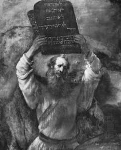

|
|
16 NABI MUSA ± ABAD KE-13 SM
Mungkin
sekali, tak ada manusia dalam sejarah yang begitu luas
dikagumi seperti halnya Nabi Musa, nabi orang Yahudi. Lebih
dari itu, selain ketenarannya, juga jumlah pengikut yang
memujanya secara pasti terus meningkat sepanjang jaman.
Diperkirakan Musa tenar pada abad ke-13 SM, bersamaan
sekitar masa Ramses II, dan dianggap pimpinan perpindahan
besar-besaran bangsa Israel dari Mesir, wafat tahun 1237 SM.
Di masa Musa hidup --seperti dijelaskan dalam buku Exodus--
ada kelompok orang Yahudi yang menentangnya. Tetapi, tak
kurang dari lima abad lamanya Musa diagung-agungkan oleh
orang-orang Yahudi. Mendekati tahun 400 SM kemasyhuran dan
nama baiknya menyebar luas ke seluruh Eropa berbarengan
dengan Agama Nasrani. Beberapa abad kemudian Muhammad
mengakui Musa sebagai seorang nabi yang sesungguhnya, dan
dengan berkembangnya Islam, Musa menjadi pula tokoh yang
dikagumi di seluruh dunia Islam (termasuk Mesir). Kini,
sesudah tiga puluh dua abad terhitung dari masa hidupnya,
Musa dihormati oleh orang Yahudi, Nasrani dan Islam
sekaligus, dan bahkan juga oleh kaum yang tak mempercayai
Tuhan. Berkat kemajuan komunikasi, dia mungkin lebih
terkenal sekarang ketimbang di masa lampau.
Di samping ketenarannya, informasi yang bisa dipercayai
menyangkut kehidupan Musa tidaklah banyak. Bahkan ada
spekulasi (meski tidak diterima oleh sebagian besar ahli
ilmu pengetahuan) bahwa Musa itu sesungguhnya orang Mesir,
karena namanya berbau Mesir dan bukan Yahudi. (Nama Musa
berarti "anak" atau "anak lelaki," dan banyak digunakan
sebagai bagian dari banyak firaun. Kitab Perjanjian Lama
berisi cerita-cerita tentang Musa yang hampir tak banyak
maknanya karena sudah banyak dijejali dengan serba
keajaiban. Kisah-kisah tentang Musa dapat menimbulkan
malapetaka,tentang Musa bisa mengubah para pembantunya
menjadi ular, merupakan contoh-contoh kejadian yang di luar
kelaziman alamiah.
Hal-hal macam ini membebani orang dengan kemustahilan
sehingga melempangkan jalan agar orang percaya bagaimana
Musa yang sudah berumur delapan puluh tahun saat itu
berkesanggupan melakukan exodus, memimpin bangsa Yahudi
melintasi padang pasir dalam jangka waktu tak kurang dari
empat puluh tahun. Sebetulnya kita ingin tahu persis apa
sebetulnya yang sudah berhasil diperbuat Musa sebelum
kisah-kisahnya terkubur dalam semak-semak dunia dongeng.
Banyak pihak yang berkeinginan melakukan penafsiran yang
wajar dari khazanah kisah Injil, misalnya tentang sepuluh
wasiat larangan, tentang penyeberangan Laut Merah. Tetapi,
paling disenangi dari cerita-cerita Perjanjian Lama
menyangkut perikehidupan Musa adalah dongeng-dongengnya yang
bisa disejajarkan dengan kisah-kisah mitologi. Cerita Musa
tentang tanaman merambat ke atas tak kunjung berakhir
amatlah mirip dengan cerita Babylonia, Sargon dan Akkad,
raja besar yang memerintah sekitar tahun 2360-2305 SM.
Pada umumnya, ada tiga hasil besar yang dihubungkan
dengan perbuatan Musa. Pertama, dia dianggap tokoh politik
yang memimpin orang Yahudi melakukan perpindahan
besar-besaran dari Mesir. Dalam hal ini, jelas memang dia
layak menerima penghargaan itu. Kedua, dia berhasil sebagai
penulis jilid pertama dari Panca Jilid Injil (Genesis,
Exodus, Leviticus, Numbers dan Deuteronomy), yang sering
dikaitkan dengan "Lima buku Musa" dan menyusun Torat Yahudi.
Buku ini termasuk Kode Musa, serangkaian hukum yang menjadi
dasar tingkah laku kaum Yahudi dalam Injil, termasuk dalam
"Sepuluh Perintah Keramat" (Ten Commandments). Dari sudut
besarnya pengaruh khususnya Torat dan umumnya Ten
Commandments, para penulis tak syak lagi dapat digolongkan
orang besar yang punya pengaruh langgeng. Tetapi, umumnya
sarjana-sarjana Injil bersepakat bahwa Musa bukanlah
satu-satunya penulis buku itu. Buku itu tampaknya ditulis
oleh beberapa penulis dan sebagian besar isinya tidak
ditulis sebelum wafatnya Musa. Ada kemungkinan Musa
memainkan beberapa peranan dalam hal penghimpunan adat
kebiasaan Yahudi atau bahkan menggariskan hukum-hukum
Yahudi, tetapi tak ada bukti pasti sejauh dan sebesar apa
peranan yang dilakukannya.
Kemudian, banyak orang menganggap Musa sebagai pendiri
monoteisme Yahudi. Rasanya tidak ada alasan kuat yang bisa
menunjang anggapan itu. Satu-satunya sumber informasi kita
mengenai ihwal Musa adalah Perjanjian Lama, dan Perjanjian
Lama jelas-jelas dan tak meragukan berkaitan dengan Ibrahim
selaku pendiri monoteisme. Meskipun begitu, memang benar
juga monoteisme Yahudi tak bisa tidak sirna tanpa Musa dan
tak perlu dipermasalahkan lagi Musa memang pegang peranan
yang menentukan dalam hal memelihara dan menyebarkan. Dalam
hal ini, tentu saja, terletak arti penting peranannya yang
terbesar sesudah Agama Nasrani dan Islam, dua agama terbesar
di dunia yang keduanya bersumber pada monotheisme. Gagasan
adanya Tuhan Yang Esa, yang dengan sepenuh hati dipercayai
Musa, yang akhirnya menyebar ke sebagian besar dunia.
|